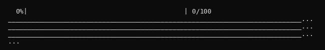

Home
ProtStar is a package for library design with machine learning. It focuses on leveraging assay-labeled data to improve libraries sampled using protein sequence models.
In order to make writing library design pipelines easier, we created a simplified interface for using sequence models. Below is an example of inverse-folding with ProteinMPNN using ProtStar. On the other tab, you can see the forty-five lines needed for the original codebase.
We similarly provide simplified APIs to a broad array of protein models including ESM3, DPLM2, and ProGen3.
from protstar.models.mpnn import ProteinMPNN
from protstar.models.utils import load_pdb
from protstar.sampling import sample
structure = load_pdb("1YCR.pdb")
masked_seqs = ["<mask>" * 98] * 8 # placeholders to be designed
model = ProteinMPNN().conditioned_on({"structure": structure}) # configure inverse-folding
seqs = sample(model, masked_seqs)["sequences"] # generate sequences
import copy, torch, numpy as np
from protein_mpnn_utils import (
parse_PDB, StructureDatasetPDB, ProteinMPNN,
tied_featurize, _S_to_seq,
)
# Step 1: Parse PDB and build dataset
pdb_dict_list = parse_PDB("1YCR.pdb", ca_only=False)
dataset = StructureDatasetPDB(pdb_dict_list, truncate=None, max_length=200000)
# Step 2: Build chain design specification
all_chains = [k[-1:] for k in pdb_dict_list[0] if k[:9] == "seq_chain"]
chain_id_dict = {pdb_dict_list[0]["name"]: (all_chains, [])}
# Step 3: Load model with architecture params from checkpoint
device = torch.device("cuda" if torch.cuda.is_available() else "cpu")
ckpt = torch.load("vanilla_model_weights/v_48_020.pt", map_location=device)
model = ProteinMPNN(
ca_only=False, num_letters=21, node_features=128, edge_features=128,
hidden_dim=128, num_encoder_layers=3, num_decoder_layers=3,
augment_eps=0.0, k_neighbors=ckpt["num_edges"],
)
model.to(device)
model.load_state_dict(ckpt["model_state_dict"])
model.eval()
# Step 4: Featurize — returns 20 tensors
batch_clones = [copy.deepcopy(dataset[0]) for _ in range(8)]
(X, S, mask, lengths, chain_M, chain_encoding_all, chain_list_list,
visible_list_list, masked_list_list, masked_chain_length_list_list,
chain_M_pos, omit_AA_mask, residue_idx, dihedral_mask,
tied_pos_list_of_lists_list, pssm_coef, pssm_bias,
pssm_log_odds_all, bias_by_res_all, tied_beta,
) = tied_featurize(
batch_clones, device, chain_id_dict,
None, None, None, None, None, ca_only=False,
)
# Step 5: Sample
sample_dict = model.sample(
X, torch.randn(chain_M.shape, device=device), S, chain_M,
chain_encoding_all, residue_idx, mask=mask, temperature=0.1,
omit_AAs_np=np.zeros(21), bias_AAs_np=np.zeros(21),
chain_M_pos=chain_M_pos, omit_AA_mask=omit_AA_mask,
pssm_coef=pssm_coef, pssm_bias=pssm_bias, pssm_multi=0.0,
pssm_log_odds_flag=False, pssm_log_odds_mask=None,
pssm_bias_flag=False, bias_by_res=bias_by_res_all,
)
# Step 6: Decode token indices to sequences
seqs = [_S_to_seq(sample_dict["S"][i], chain_M[i]) for i in range(8)]
ProtStar was developed by Ishan Gaur and is maintained by the Listgarten Lab at UC Berkeley.
Why ProtStar?¶
Our framework code-ifies the insights from our recent theoretical unification of generative and predictive protein models, ensuring interoperability between various training, sampling, and scoring strategies. It has drastically reduced the work to develop new methods in our own research, and we use it with our wet-lab collaborators as well.
We aim to provide you with implementations of the latest design methodologies in the field, along with a catalog of the field's flagship models, all working out-of-the-box.
Switching Models and Algorithms is Easy¶
Take the stability optimization experiment from ProteinGuide as an example. The paper presents two guidance algorithms — TAG (gradient-based) and DEG (enumeration-based) — and originally used TAG with PMPNN. With ProtStar, switching to DEG or swapping in ESM3 is just a change of imports:
from protstar.models import PMPNN, StabilityPredictor
from protstar.guide import TAG
from protstar.sampling import sample_ctmc_linear_interpolation
from protstar.models.utils import load_pdb
structure = load_pdb("1YCR.pdb")
# Load the models
gen_model = PMPNN().conditioned_on({"structure": structure}) # inverse-folding model
predictor = StabilityPredictor() # ddg predictor trained on the Megascale dataset
# Get the stability guided conditional generative model
guided = TAG(gen_model, predictor).cuda()
# Sample 8 stability-optimized variants starting from fully masked sequences
masked_seqs = ["<mask>" * 98] * 8
seqs = sample_ctmc_linear_interpolation(guided, masked_seqs)
from protstar.models import PMPNN, StabilityPredictor
from protstar.guide import DEG
from protstar.sampling import sample
from protstar.models.utils import load_pdb
structure = load_pdb("1YCR.pdb")
# Load the models
gen_model = PMPNN().conditioned_on({"structure": structure}) # inverse-folding model
predictor = StabilityPredictor() # ddg predictor trained on the Megascale dataset
# Get the stability guided models
guided = DEG(gen_model, predictor).cuda()
# Sample 8 stability-optimized variants starting from fully masked sequences
masked_seqs = ["<mask>" * 98] * 8
seqs = sample(guided, masked_seqs)["sequences"]
from protstar.models import ESM3, StabilityPredictor
from protstar.guide import DEG
from protstar.sampling import sample
from protstar.models.utils import load_pdb
structure = load_pdb("1YCR.pdb")
# Load the models
gen_model = ESM3("esm3-small").conditioned_on({"structure": structure}) # inverse-folding model
predictor = StabilityPredictor() # ddg predictor trained on the Megascale dataset
# Get the stability guided models
guided = DEG(gen_model, predictor).cuda()
# Sample 8 stability-optimized variants starting from fully masked sequences
masked_seqs = ["<mask>" * 98] * 8
seqs = sample(guided, masked_seqs)["sequences"]
Built with Agents in Mind¶
We're excited about AI coding agents but, as scientists, recognize it's tricky to trust their results. Our Workflows include algorithm guides and evaluation checklists at each step — the same ones we use with our collaborators, continuously updated as we learn more. Follow the Setup instructions to give your agents our AGENTS.md and SKILLS.md files so they avoid common mistakes we uncovered during testing.
Share Your Work on ProtStar¶
We want to make it easy for you to get your work out there. Our Contributing section has instructions for submitting new models and design algorithms to be included in the next release. We've also created SKILL.md files that walk your coding agents through the process. We'd love to include your work, even if you've never contributed to open source before!
Library Design with ProtStar¶
With ProtStar, designing libraries to optimize some property of a protein requires the use of four modules:
- Data: assay labeled variants or homologous sequences stored as
ProteinDatasets - Models: sequence
GenerativeModels, propertyPredictiveModels, and how to train them with your data - Sampling: generating a library to optimize your property using the models
- Evaluation: tools to sanity check the pipeline at each of the 3 preceding stages
Unconditional Sampling (Models + Sampling)¶
The simplest pipeline: sample from a pretrained model with no data and no property optimization. This demonstrates the Models and Sampling modules.
from protstar.models import ESMC
from protstar.sampling import sample
model = ESMC("esmc_300m").cuda()
seqs = sample(model, ["<mask>" * 100] * 8)["sequences"] # 8 random proteins

That's it, four lines. The sample function calls the ESMC model's get_log_probs function under the hood. Using the probabilities ESMC predicts at each masked position, the sampler iteratively fills in the amino acids in the sequence. See the unconditional sampling example for details.
Guided Library Design (All Four Modules)¶
In the previous section, we looked at a very simple example of doing library design with protein gen. Unconditional sampling just uses a pre-trained model and gets sequences from it; however, most workflows that we'd use to design a real library are a little more involved. One example is a conditional generation method from a recent paper called Protein Guide. Protein Guide keeps the same masked sequence modeling core, but trains a separate property predictor (e.g. of stability or activity) and uses it to guide the sequence models generations.
- Unconditional:
ESMC → Sample → Library - ProteinGuide:
ESMC + Assay Data → Train + Validate Predictor → Construct Guided Model → Sample → In-silico Library Validation
Below is we've delineated the main steps of ProteinGuide and which ProtStar APIs they use. For more conceptual detail on the method, checkout the ProteinGuide workflow.
- Data: create a
ProteinDatasetusing your assay-labeled variants - Train and validate models: then use the Data Splits to train several
PredictiveModels(e.g.OHEMLP,LinearProbe,SecondOrderLinearModel) and select the one that seems to generalize best. - Noisy predictor evaluation: verify noisy predictor and oracle agree on clean sequences before proceeding. You can prompt your agent to complete and the previous step using the
Training Predictorsworkflow. - Guided sampling: combine generator + predictor with TAG/DEG, then run
sample. - In-silico library evaluation:
scorethe library with the oracle, check the library diversity viamean_hamming_dist, and query theAF3Clientto check foldingpLDDTmetrics before wet-lab testing.
See the ProteinGuide workflow for full details and the stability-guided generation example for a concrete implementation.